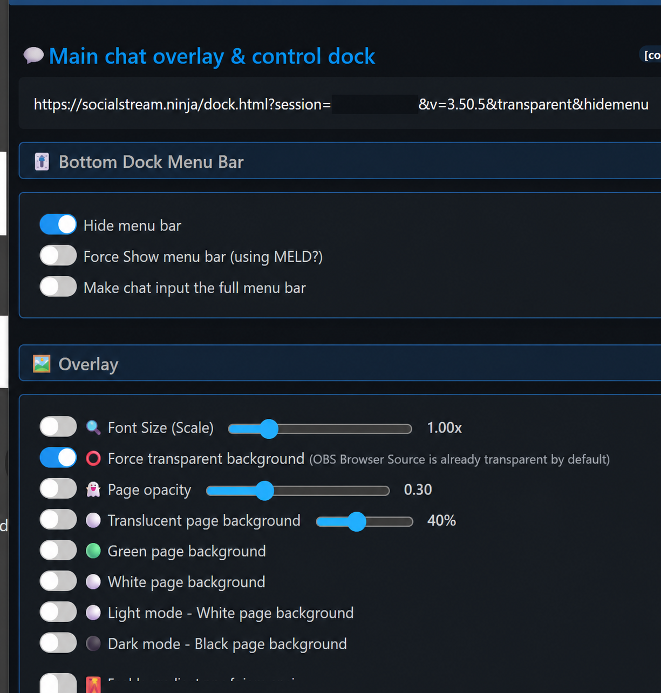

問題
MELD、Social Streamデスクトップアプリ、その他のブラウザ表示領域でDock URLを開くと、大きな灰色の四角と下部メニューバーが表示される場合があります。ドックは動作していますが、ページ背景がまだ透明になっていません。

この2つの設定をオンにする
- Social Stream Ninjaの設定を開き、次を探します： メインチャットオーバーレイと操作ドック（Main chat overlay & control dock）.
- 展開する項目： ドック下部のメニューバー を開き、次を有効にします： メニューバーを隠す（Hide menu bar）.
- 展開する項目： オーバーレイ を開き、次を有効にします： 背景を強制的に透明化（Force transparent background）.
- 更新したDock URLをコピーし、表示先アプリの古いURLを置き換えてください。すでに開いている場合は再読み込みします。

更新したURLには、次の両方が含まれる必要があります： transparent および hidemenu。自分の session の値は変更しないでください。
期待する表示
灰色のページと下部メニューが消えます。チャットメッセージは、ドックの背後の映像やコンテンツに重ねて表示されます。
OBSブラウザソースは標準で透明なので、この手動設定は主にMELD、デスクトップのオーバーレイウィンドウ、その他のOBS以外のブラウザ表示に必要です。
灰色の四角が残る場合
- 表示するURLに次が含まれていることを確認します：
transparentおよびhidemenu. - URLを置き換えた後、ページを再読み込みするか、削除して追加し直してください。
- 次はそのままにします： 半透明のページ背景, 緑のページ背景, 白いページ背景, ライトモード、および ダークモード をオフにしてください。
- URLを表示するアプリが、ブラウザ背景の透明化に対応しているか確認してください。